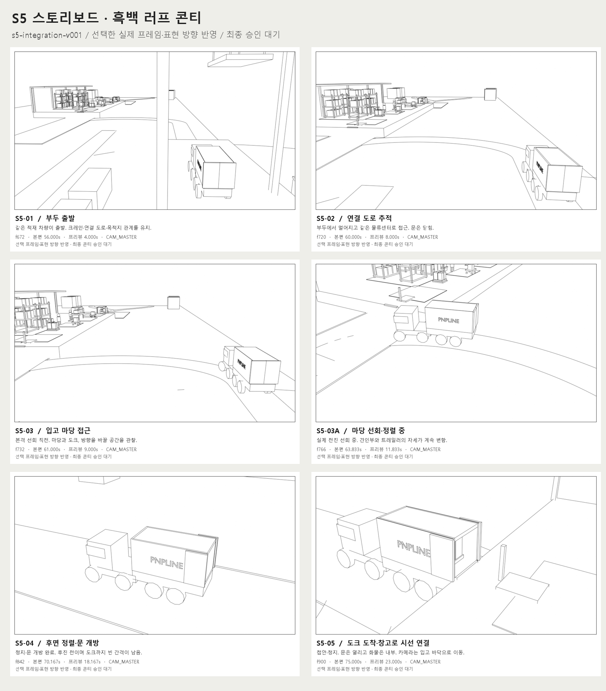
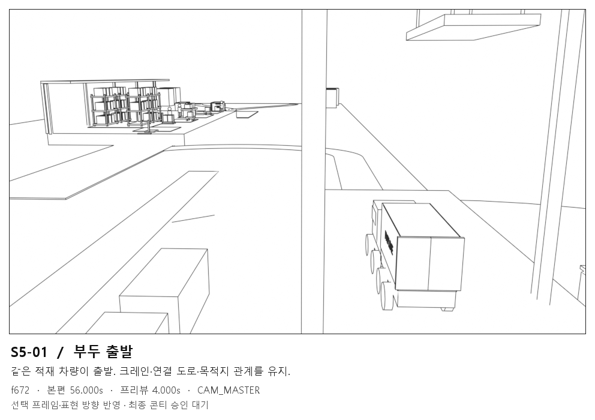
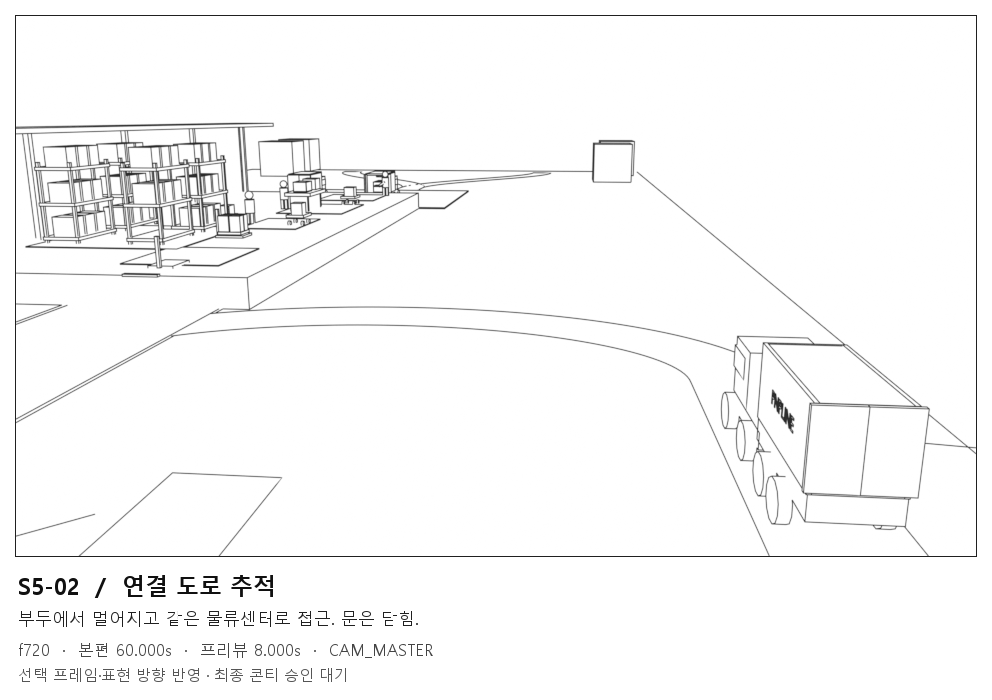
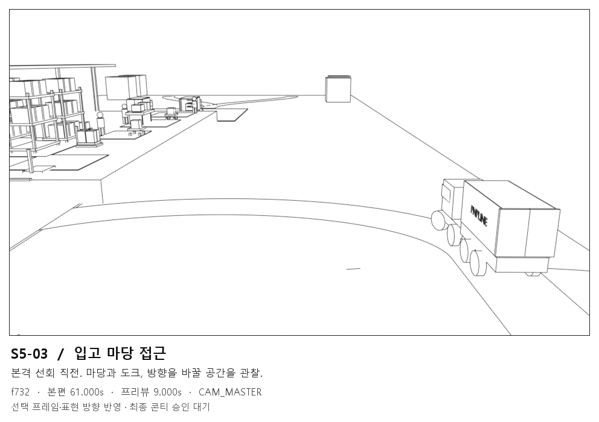
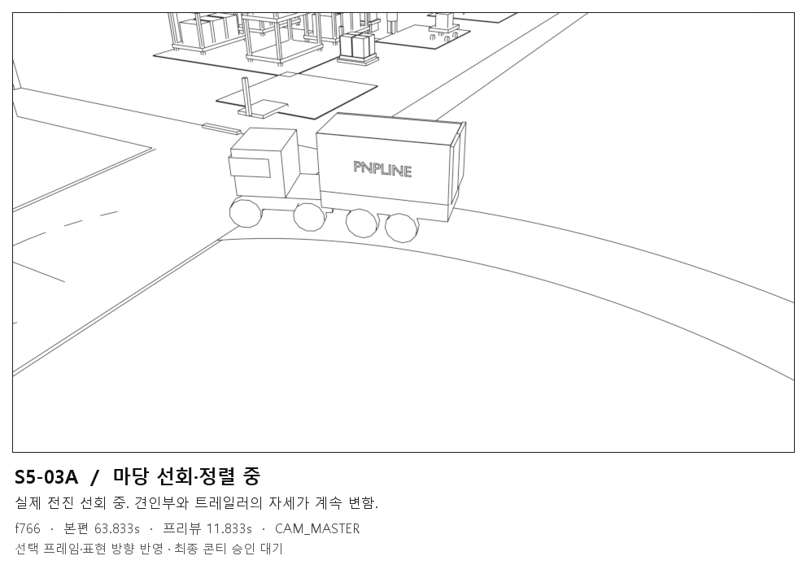
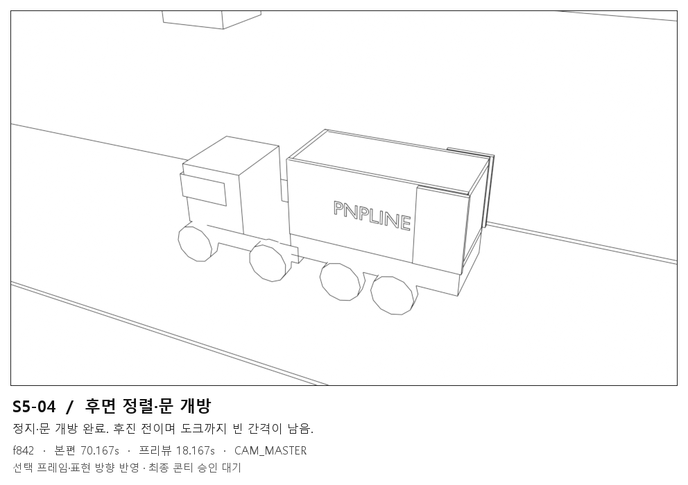
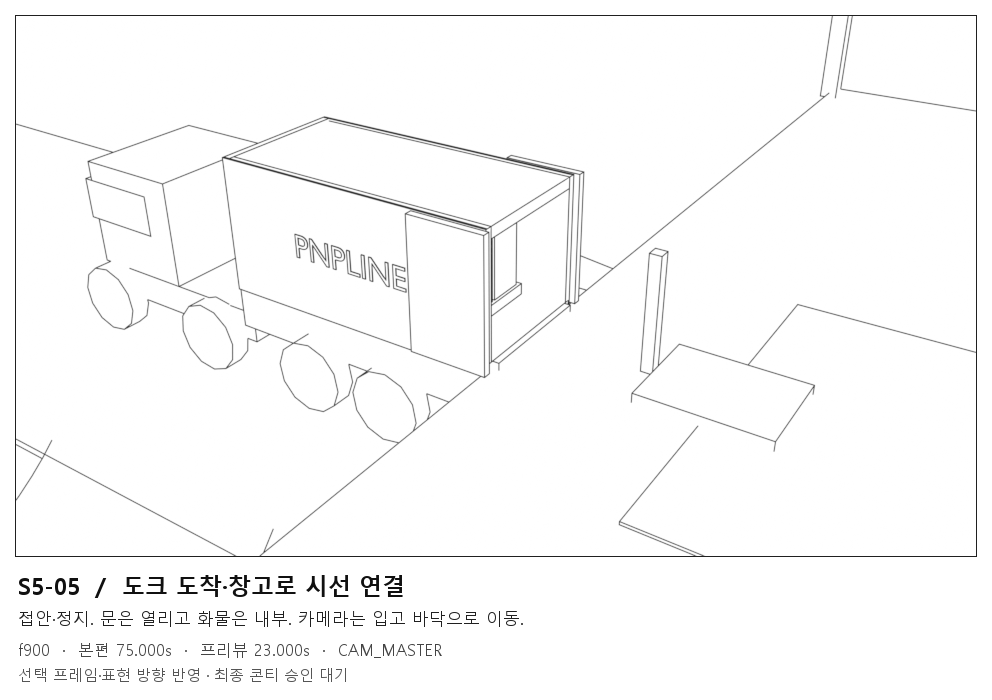

표현 방향 샘플 · f766
동일한 3D 상태와 카메라에서 만든 흰 바탕·검은 윤곽입니다. 사용자가 선택한 표현 방향을 아래 여섯 장에 적용했습니다. 최종 콘티 묶음은 사용자 검토 대기 상태입니다.

기준: master-s5-integration-v001.blend · 현재 저장본 SHA cc2dec40… · 프리뷰 구간 동작 동일.
이번에 지정하신 기준의 실제 구도를 따릅니다. 앞서 만든 full-layout-master-v001과 구도가 다릅니다.
후보: 01 f672 → 02 f720 → 03 f732 → 03A f766 → 04 f842 → 05 f900.
03은 접근, 03A는 실제 선회 중이며, 정지한 f810을 선회 장면으로 사용하지 않습니다.
프레임과 선화 방향은 선택 완료했습니다. 마스터 무수정·동일 투영으로 6장을 제작했으며, 최종 묶음 승인은 별도입니다.
6장 원본·선화 전체 대조 · 흑백 윤곽 스타일 샘플 · 개별 6장과 원본 · 검증 보고서
빠른 검토 영상: 24fps · 13.54초 · 원본 325프레임 모두 사용. 원속도: 12fps · 27.08초. 콘티의 본편·프리뷰 시각 표기는 원속도 기준입니다.
빠른 프리뷰 준비됨

동일한 3D 상태와 카메라에서 만든 흰 바탕·검은 윤곽입니다. 사용자가 선택한 표현 방향을 아래 여섯 장에 적용했습니다. 최종 콘티 묶음은 사용자 검토 대기 상태입니다.





